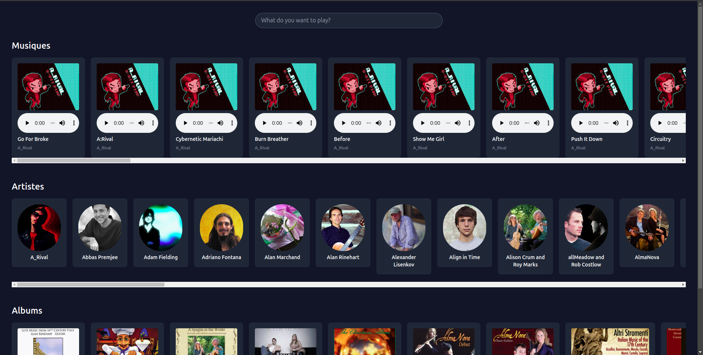

Capture d'écran du projet à insérer ici
MySpotify est un clone de la célèbre plateforme de streaming musical Spotify réalisé en 3 jours et développé dans le cadre de mes projets Epitech par groupe de 3.Ce projet a été construit en utilisant des technologies front-end avancées pour créer une expérience utilisateur fluide et réactive similaire à l'application d'origine.
L'objectif principal était d'apprendre les bases de la librairie React tout en intégrant des fonctionnalités telles que la lecture de musique, la gestion de playlists et une interface utilisateur inspirée du design de Spotify. Nous avons également mis en place un système de recherche pour permettre aux utilisateurs de trouver facilement leurs artistes et titres préférés.